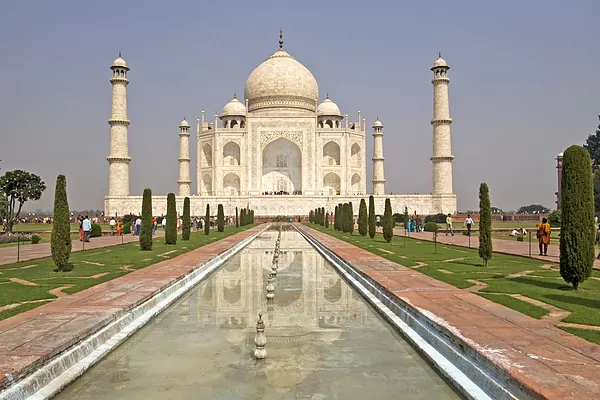
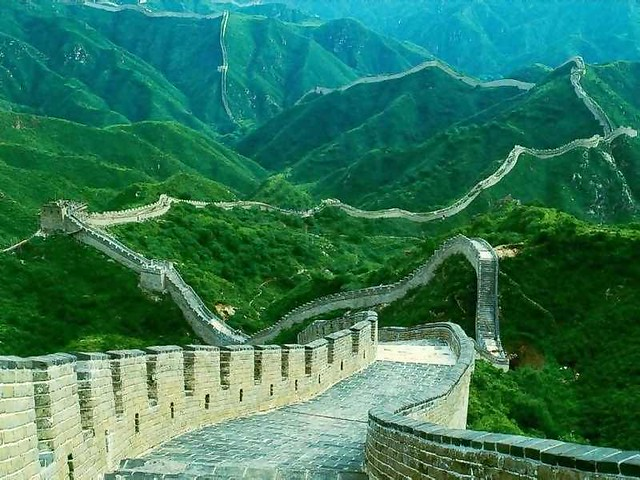
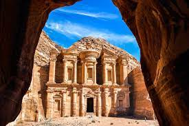
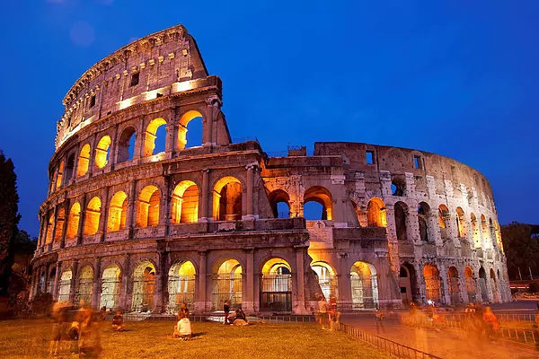
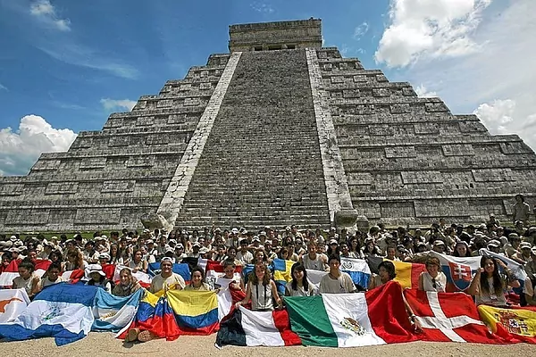
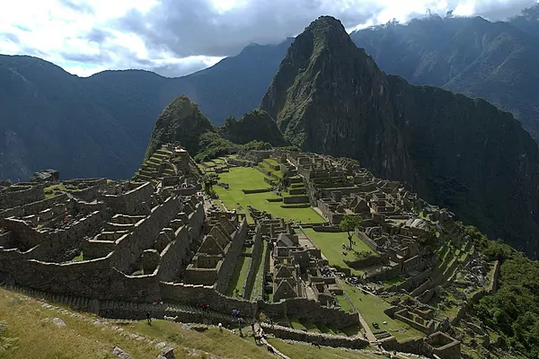
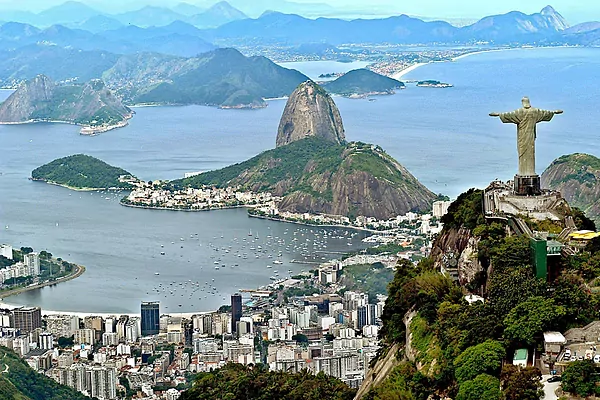

1- Taj-Mahal

Está considerado el mejor complejo arquitectónico del mundo.
El Taj Mahal es un mausoleo de mármol blanco marfil en la orilla sur del río Yamuna en la
ciudad de Agra (India).
Fue encargado en 1632 por el emperador Shah Jahan para albergar la tumba de su esposa
favorita, Mumtaz Mahal. La tumba es la pieza central de un complejo que incluye una mezquita
y una casa de huéspedes. Su valor de construcción trasladado a hoy en día serían un 750
millones de euros.
2- La Gran Muralla China

Parte de la Gran Muralla China.
Es algo más que una muralla para un país como China. Representa también su cultura y filosofía de
vida hoy en día. Sirvió para defenderse de los mongoles y llegó a tener más de 20.000 kilómetros
desde Corea al desierto de Gobi.
Las primeras construcciones de la Gran Muralla China datan del siglo VII a.C. entre los que
destaca el muro construido entre 220 y 206 a.C. por el primer emperador de China, Qin Shi Huang.
3- Petra

La fachada principal de Petra (Jordania).
Punto clave de paso de la Ruta de la Seda, se levantó en el reino Nabateao. Tras su abandono fue
descubierta en 1812 por explorador suizo Johann Ludwig Burckhardt.
Se compone de 1.500 metros de longitud con fecha del año 312 a.C. Petra fue nombrada por la
revista Smithsonian como uno de los "28 lugares para ver antes de morir".
4- El Coliseo

El Coliseo de Roma (Italia).
Con capacidad para 65.000 espectadores, acogió luchas de gladiadores durante 500 años y se
convirtió en el circo más grande entre todos los construidos en aquella época (año 72 d.C.).
Ha sufrido importantes daños por terremotos y expolios, pero mantiene todo su esplendor como
símbolo icónico de la Roma imperial. Es una de las atracciones turísticas más populares de Roma
y también tiene vínculos con la Iglesia Católica Romana. Cada Viernes Santo el Papa encabeza una
procesión del Vía Crucis por el Coliseo.
5- Chichen Itza

El Chichen Itza en México.
El Templo de Kukulcán es una pirámide escalonada mesoamericana que domina el centro del sitio
arqueológico de Chichén Itzá en el estado mexicano de Yucatán. El edificio está designado más
formalmente por los arqueólogos como Estructura 5B18 de Chichén Itzá.
La pirámide tiene 91 escalones en cada uno de sus lados. Sumando todos ellos más el escalón
final son 365 escalones, tantos como días tiene un año.
6- Machu Picchu

El Machu Picchu en Perú.
El Machu Picchu fue construido como propiedad del emperador inca Pachacuti (1438-1472). A menudo
denominada erróneamente como la "Ciudad Perdida de los Incas" y es todo un icono familiar de la
civilización Inca. Fue declarado Santuario Histórico del Perú en 1981 y Patrimonio de la
Humanidad por la UNESCO en 1983.
Sus peculiares características arquitectónicas y paisajísticas, y el velo de misterio que ha
tejido a su alrededor buena parte de la literatura publicada sobre el sitio, lo han convertido
en uno de los destinos turísticos más famosos del planeta, así como una de las siete maravillas
del mundo.
7- El Cristo Redentor

El Cristo Redentor en el Parque Nacional del Bosque de Tijuca.
Entre 1922 y 1931 se creó esta estatua art deco de Jesucristo en Río de Janeiro por el escultor
polaco-francés Paul Landowski y los ingenieros Heitor da Silva Costa y Albert Caquo.
La estatua pesa 635 toneladas y está ubicada en la cima de la montaña Corcovado en el Parque
Nacional del Bosque de Tijuca. Símbolo del cristianismo en todo el mundo, la estatua también se
ha convertido en un icono cultural tanto de Río de Janeiro como de Brasil.